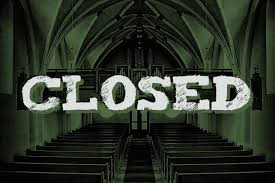
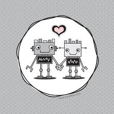
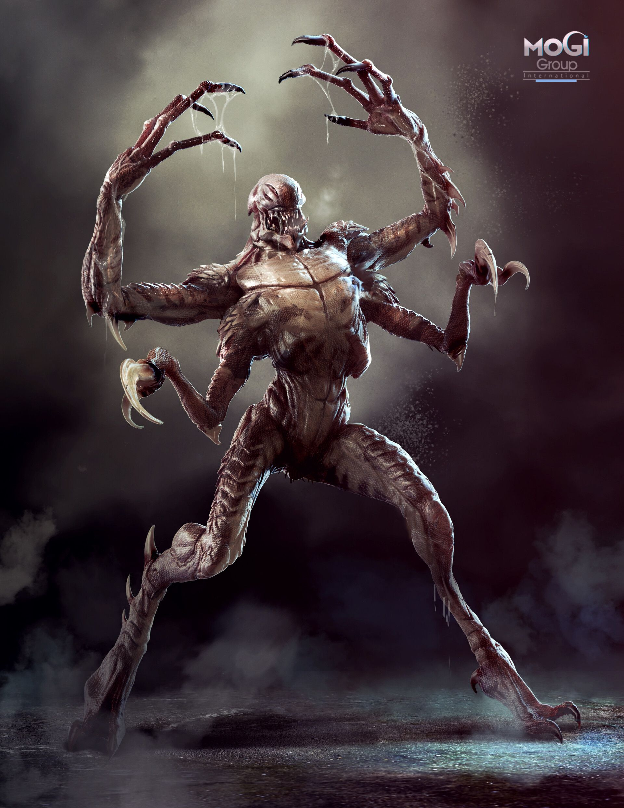

Church of Adriana
Ordered to close down!

Huge news today. The council has ordered the Church of Adriana, a long time gnome church to close thier doors here in Sharn. Text: the author of this article. The church has been operating here in Sharn for over 300 years. The church itself is over 4000 years old said to have been one of the first gnome churches. When I asked the council how long would the church be closed for I was given no answer. But you know Rodney Twillet isn't taking that sitting down. So you stay tuned while I dig deeper on this. I think this is foul play by the council. I feel like the council is just trying to shut down all churches so they can have total control over us. If we can't go to church what is next, can't go out to eat. Can't go to friends houses to play games. Rodney Twillet will figure this out for you. Don't you worry, you are in safe hands.
What kind of government thinks they have the right to close down a church. Yes... the church did take a lot of money from that poor family to bring their son back to to life. And yes they some how deleted his soul completely. So that poor boy is for ever dead. No after life either. But that doesn't mean the government should step in. This is the CHURCH.
By: Rodney Twillet.
Mystery of the Machines
Last week was an eye opener for me. I wrote a story, mostly true but full of embellishments and sensationalisms. This story led me into a world that I didn't want any part of. A world of hatred and fear. The Warforged aren't our enemies. They aren't mindless beasts waiting to rip your throat out. They are living thinking beings. While it is true that the warforged in the bar attacked the bartender and my party, I don't believe it was of his own volition. He seemed to be unaware of what he was doing after some of the fight was taken out of ohim. I didn't go with my partners when they took him to the refund offices so I thought I would pay them a visit.
Since I had become something of a household name due to the propaganda I had unwittingly become a part of I disguised myself and made my way down there. I saw a couple groups waiting to be processed. THey were accompanied by two of the large machines. THey looked as though they had been beaten and damaged in the attempt to subdue them. Despite the unchanging expressions of their metal and wooden faces I detected a hint of sadness.
I approached the clerks working at the desks. A couple of humans who seemed slightly annoyed by their work. THey told me they worked for a company outside of Sharn, which seemed strange since it had seemed that this was a government run program by the council of Sharn. I noticed when they paid the other two groups that they gave them their platinum in coiin instead of the normal bank notes that any government run organization would normally use. The two warforged were placed in the back room and the door quickly shut behind them. What was back there? Where were they taking them? I need to find out these answers.
By: Zipp Waywocket
SBB
Should be stopped

It was brought to my attention by our star reporter Zipp Waywocket that the SBB is a hate group and the warforged are not just robots but living creatures. And those should be given equal rights. We should not be hunting them down, but welcoming them in to our city. From this point on this paper does not agree with any actions of the SBB and will not help spread their word through our great city. Warforged are our friends not our enemy. I think we should look into and stop the refund checks. Killing them all off would be a horrible thing.
By: Blacktooth Gnomebottom.
Monsters in SEWERS!

Rumors have it that there are monsters living in the sewers of Sharn! Reports have come in of people being found washed up in the river missing their brains. What could be the cause of these horrible murders? The council of Sharn doesn't seem to be investigating what is going on. The citizens of Sharn are in danager and must be kept safe. By: Zipp Waywocket
THE HUNT!
Only one slot left
There is only one slot left for this years hunt. Do you have a couple friends and don't mind risking everything at the chance of being rich. Prices this year are as followed.
1st place 20p!!! 2nd place 10p 3rd place 5p.

Sports:
Hrazhak
Scores
- Bats:0-Bears: 2
- Wolves:0 - Rats: 2
- Text:0-Tigers:2
- Hippos:2-Boars:0
SkyBlades
- Humans:6- Elves:7
- Halflings:6 -Hobgoblins: 4
- Orcs:12 - Goblins:3
- Trolls:0 - Gnomes:5
Six Stones
Six Stones has been BANNED by decree of The Council of Sharn
Dragon Blood Use Rise to NEW RECORDS!!
The highly popular drug Dragon Blood is not just a lower Dura issue anymore. It has been found in the home of Thurik Davandi the well known and loved councilor Middle Menthis.(Text "Lazy DM didn't change this one.") IS NO WHERE SAFE FROM THIS HORRIBLE MONSTER!?